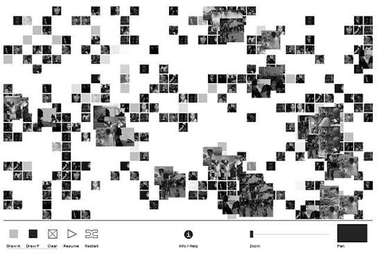

Marc Lafia and Fang-Yu Lin
The Battle of Algiers
2006 & 2018

The Battle of Algiers takes scenes and still images from the 1965 film and reorganizes them using a computer-based system. The French authorities and Algerian nationalists are represented as different groups or cells. As the viewer interacts with the project, movement and interactions can cause different pieces of the film to appear. Instead of watching the original movie in its normal order, the project constantly rearranges it and creates a new way of experiencing the film.